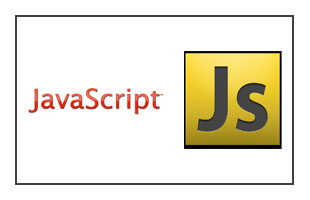
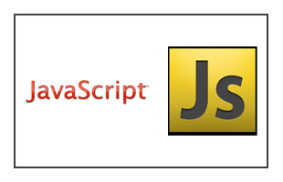

Filamentos de plástico
Disponibilizamos uma ampla gama de filamentos, incluindo PLA, ABS, PETG e outros materiais especializados, que se destacam pela durabilidade, flexibilidade e variedade de cores. Cada filamento é cuidadosamente desenvolvido para garantir uma impressão suave e resultados de alta precisão, permitindo que você realize projetos com a máxima qualidade e eficiência.
Canetas 3D
Nossas canetas 3D são ferramentas versáteis que permitem criar objetos tridimensionais com facilidade. Com design ergonômico e opções de controle ajustáveis, nossas canetas são perfeitas tanto para iniciantes quanto para profissionais. Elas permitem a modelagem direta e criativa de peças, protótipos e obras de arte em 3D, oferecendo uma experiência interativa e envolvente.
Acessórios de Impressão 3D (a reformular)
Oferecemos uma gama completa de acessórios para aprimorar sua experiência de impressão. Isso inclui peças de reposição, ferramentas de manutenção, superfícies de impressão e muito mais. Cada acessório é projetado para complementar e otimizar o desempenho das impressoras 3D, garantindo que seu equipamento funcione de maneira eficiente e confiável.


 
